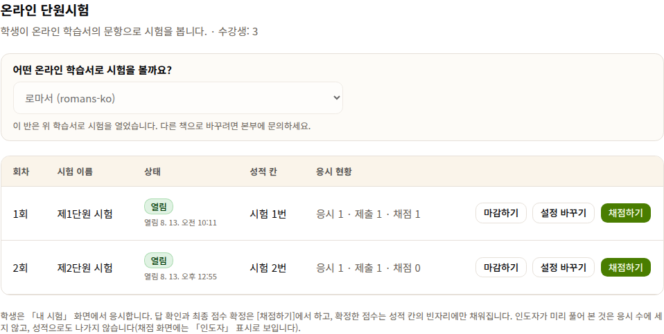
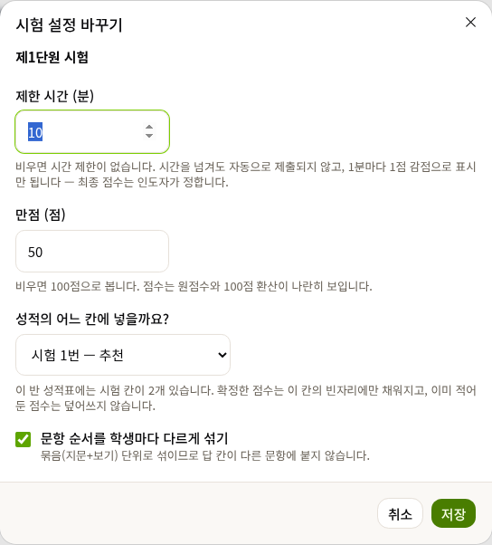
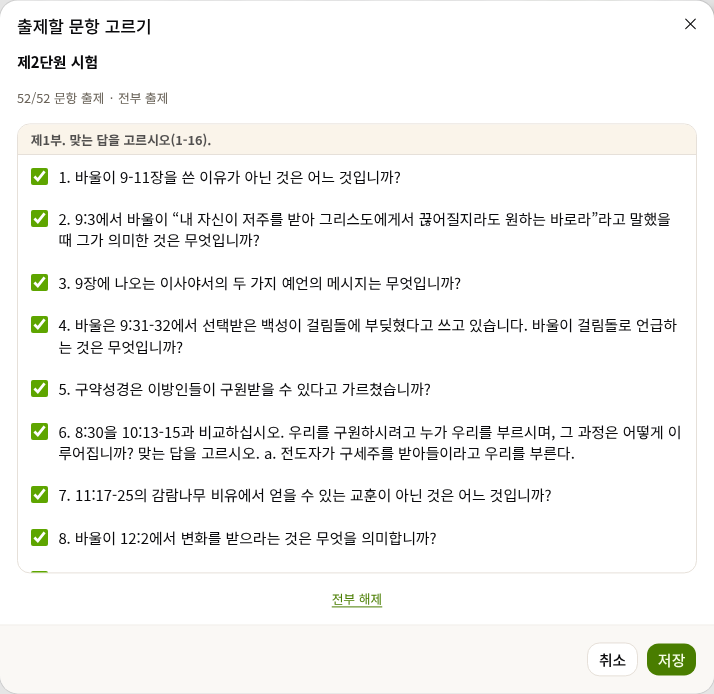
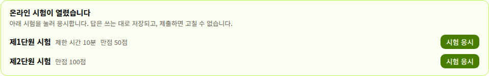
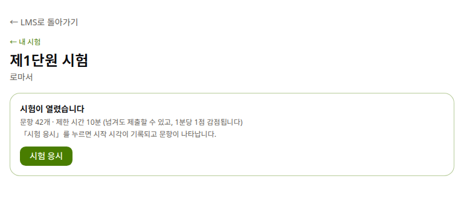
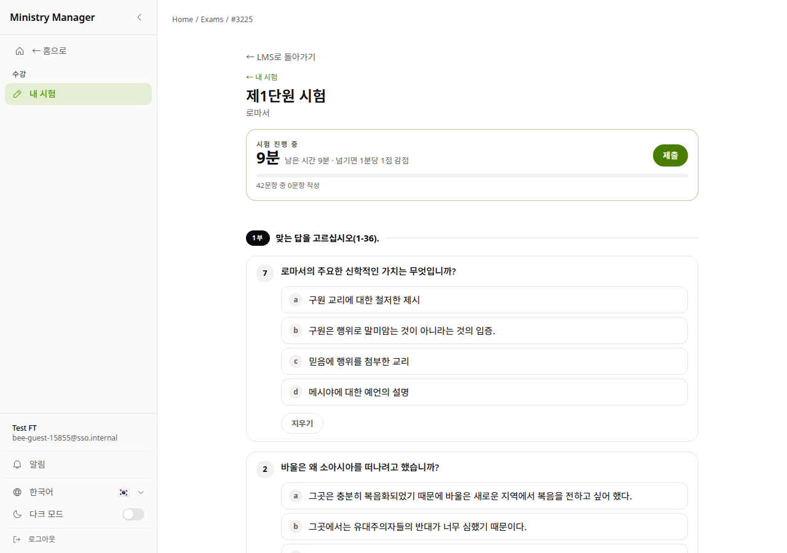
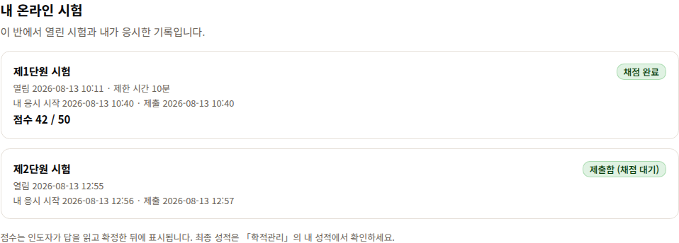
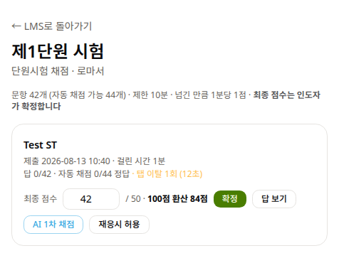
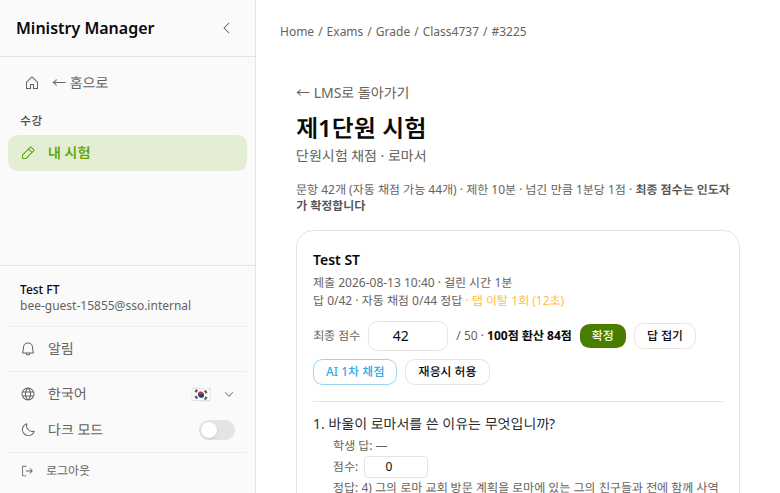

학습서의 문항으로 단원시험을 온라인으로 볼 수 있습니다. 인도자가 세미나 방에서 시험을 열면, 학생은 같은 세미나 방에서 응시하고, 인도자가 답을 읽고 점수를 확정하면 성적표까지 이어집니다. 이 안내는 그 순서 그대로입니다.
세미나 방 위쪽 탭에서 「온라인 시험」을 누릅니다. 이 탭은 인도자에게만 시험을 여는 자리로 보이고, 학생에게는 자기 응시 기록으로 보입니다.
종이 학습서로 공부하는 반도 됩니다 — 반이 온라인 학습서를 쓰지 않아도, 같은 과목의 온라인 학습서 문항으로 시험만 온라인으로 열 수 있습니다. 쓰실 반은 따로 안내드립니다. 이번 학기에 꼭 쓰셔야 하는 것은 아닙니다.
「온라인 시험」 탭에 들어가면 먼저 어떤 학습서로 시험을 볼지 묻습니다 — 우리 반 과목에 맞는 책이 자동으로 추천됩니다. 한 번 열면 그 책으로 고정되고, 다른 책으로 바꾸려면 본부에 문의합니다.

열기를 누르면 시험 설정을 정합니다. 네 가지뿐입니다.

기본은 그 단원 시험 문항 전부 출제입니다. 진도에 맞춰 일부만 내고 싶으면 문항 고르기에서 체크를 풀면 됩니다 — 단, 시험이 열려 있는 동안은 바꿀 수 없고, 열기 전이나 마감한 뒤에만 됩니다.

시험이 열리면 학생이 세미나 방에 들어왔을 때 맨 위에 안내가 뜹니다. 따로 주소를 알려줄 필요가 없습니다 — 늘 다니던 세미나 방이 곧 시험장입니다.

시험 응시를 누르면 먼저 문항 수와 제한 시간을 안내하고, 한 번 더 누르면 시작 시각이 기록되며 문항이 나타납니다.


제출하면 답은 읽기 전용이 되어 고칠 수 없고, 점수는 인도자가 답을 읽고 확정한 뒤에 표시됩니다. 학생도 세미나 방의 「온라인 시험」 탭에서 자기 응시 기록을 봅니다.

제출한 학생이 생기면 「온라인 시험」 탭의 채점하기가 채점 화면을 엽니다. 객관식은 자동으로 미리 채점되어 있고, 인도자는 그 위에서 점수를 다듬어 확정합니다.

답 보기를 누르면 문항마다 학생 답 · 점수 칸 · 정답이 나란히 펼쳐집니다. 주관식을 읽고 문항별 점수 칸에 부분 점수를 주면 위의 최종 점수에 합산됩니다. 소수점 점수도 됩니다.

[확정]한 점수는 시험을 열 때 정한 성적표의 시험 칸으로 갑니다 — 단, 빈 칸에만 채워지고 이미 적어 두신 점수는 절대 덮어쓰지 않습니다. 그러니 손으로 먼저 기록해 두신 반에서도 안심하고 쓰실 수 있습니다.
학생의 최종 성적 확인은 평소와 같습니다 — 「학적관리」의 내 성적에서, 수업 종료 후에는 인도자 평가를 마친 뒤에 봅니다.
| 종이 학습서로 공부하는 반인데 되나요? | 됩니다. 같은 과목의 온라인 학습서 문항으로 시험만 온라인으로 엽니다. |
|---|---|
| 문항을 미리 보고 싶어요 | 인도자가 직접 [시험 응시]로 풀어 보십시오. 인도자 응시는 응시 수·성적에 잡히지 않습니다. |
| 학생이 실수로 제출했어요 | 채점 화면의 [재응시 허용]으로 다시 열어 줍니다. |
| 시간을 넘겨서 냈어요 | 자동 제출·자동 감점되지 않습니다. 넘긴 만큼 「1분당 1점 감점」으로 표시만 되고, 반영 여부는 인도자가 정합니다. |
| 일부 문항만 내고 싶어요 | [문항 고르기]에서 체크를 풉니다. 열려 있는 동안은 못 바꾸니, 열기 전이나 [마감하기] 후에. |
| 이미 성적표에 점수를 적어 뒀는데요 | 덮어쓰지 않습니다. 확정 점수는 지정한 시험 칸의 빈 칸에만 들어갑니다. |
| 다른 책으로 열고 싶어요 | 한 번 열면 반의 학습서가 고정됩니다. 본부에 문의해 주십시오. |